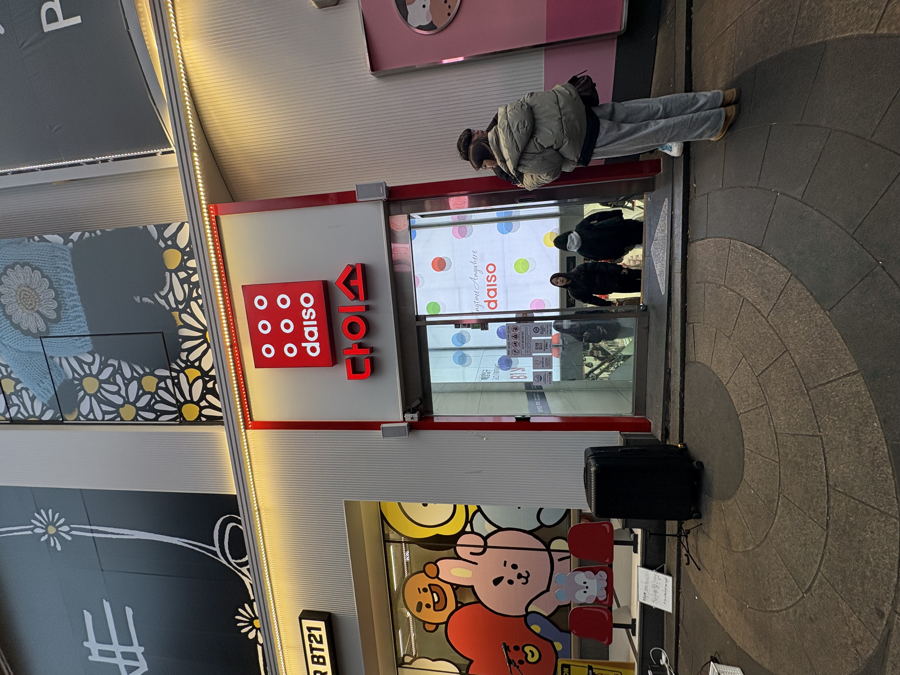
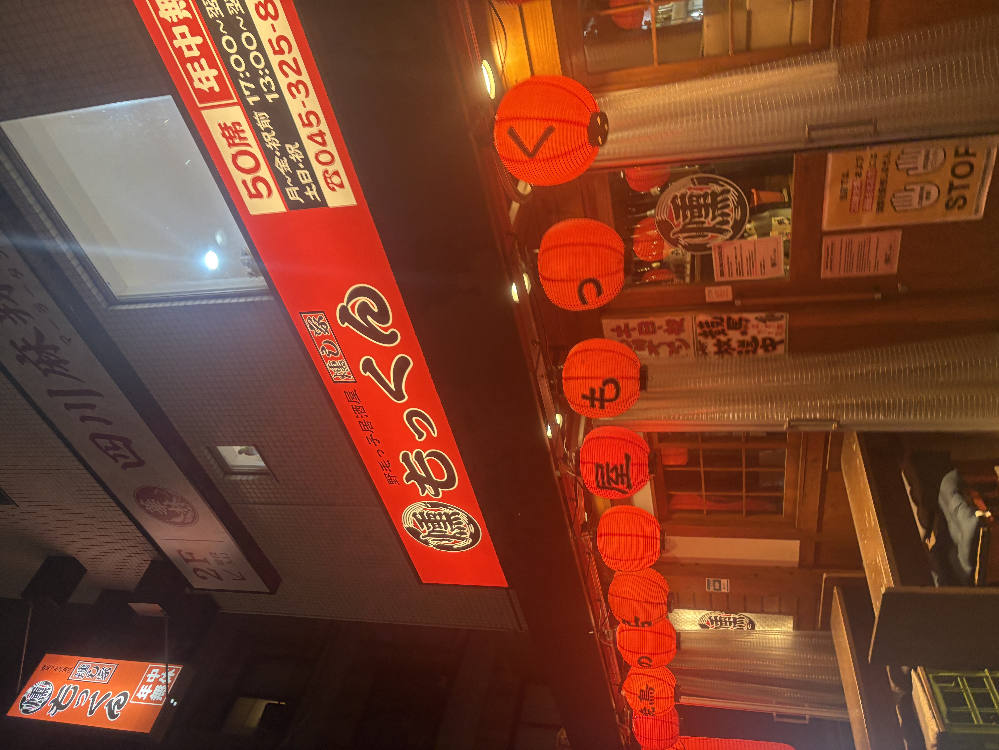
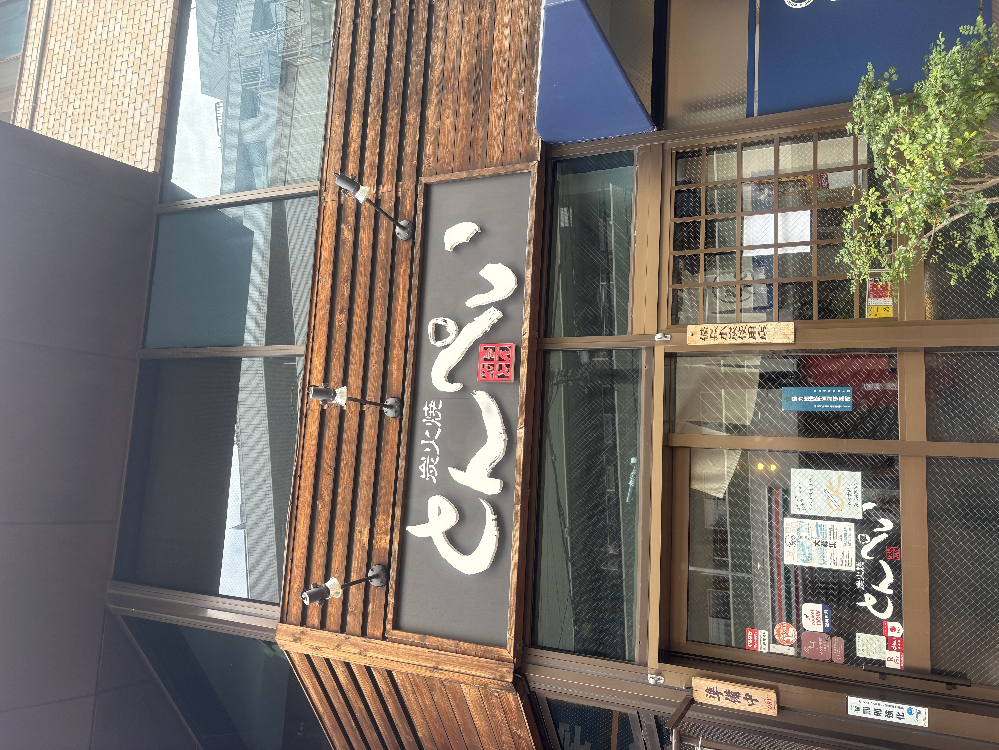

韓国のダイソー

2025.1.3 韓国 撮影者：松本
日本とは少し違って赤がメインとなっている
しかし、正方形を基準としていることは同じなため、韓国語が読めなくても一目でわかりやすくなっている。
居酒屋

2026.10.18 日ノ出町 撮影者：松本
赤、黒、白の三色が発光しているため、夜は目に入ってきやすかった。
また、「もっくん」と人の名前のような親しみやすいネーミングであった。
鉄板焼き

2026.10.18 上大岡 撮影者：松本
赤、黒、白と上の写真と基盤は同じだが、配色、字体、文字の後ろの木目などが相まって一目で鉄板焼きの店だと分かるようになっている。